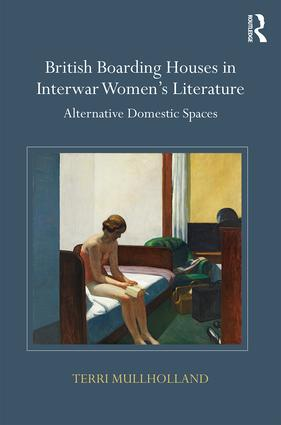
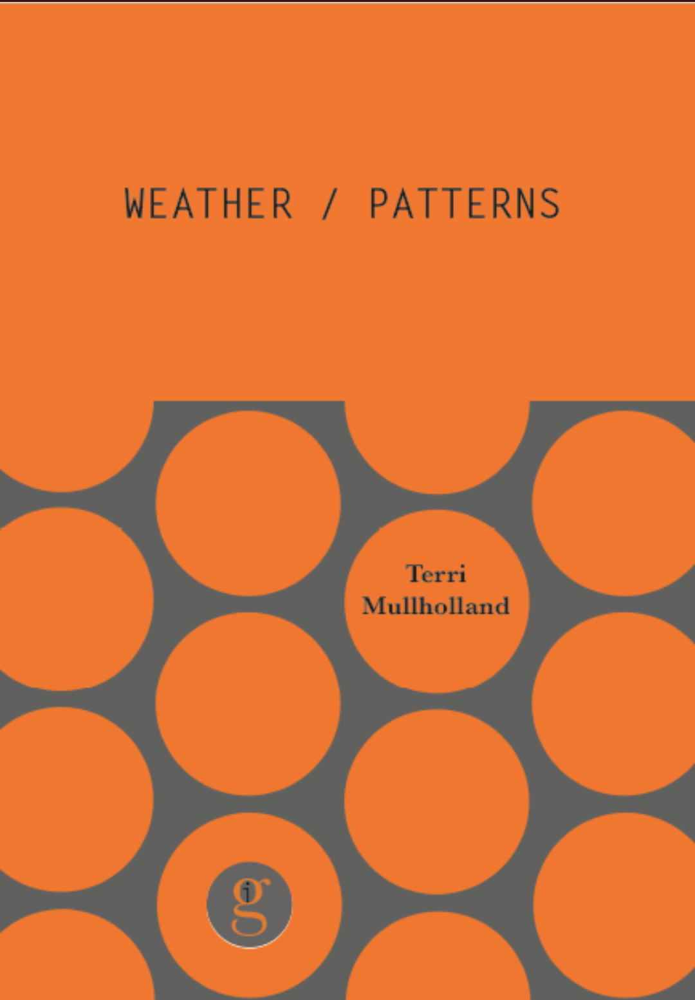
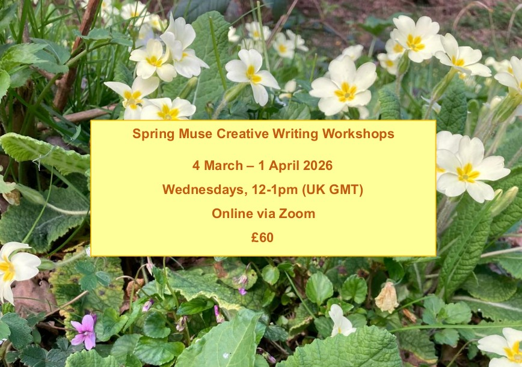

I'm Terri, a writer and researcher
living in London
Read my Flash Fiction
Read my Book
Work with me - Proofreading and Editing Services
My research interests are in women’s writing, modernism, and critical and cultural theory. I am fascinated by the history of domesticity and the forgotten stories of women’s experiences and I’m particularly obsessed by the influence different spaces and places have on their inhabitants.
I write flash fiction and my stories have appeared in many journals and anthologies, including Litro, Flash Fiction Magazine, Toasted Cheese, Severine, Tether's End, The Liminal Review, Analogies & Allegories Literary Magazine and the Bath Flash Fiction anthology 2021. My work has been nominated for the Pushcart Prize and in 2021 was shortlisted for the Bridport Prize for Flash Fiction.
I received my MA in Modern and Contemporary Literature from Birkbeck, University of London and my doctorate in English Literature from the University of Oxford.
I have taught Critical Theory and Modernism for the Department for Continuing Education at the University of Oxford and lectured on women’s writing and modernism.
When I’m not writing I can be found running, doing yoga, or curled up with a cat and a good book.


|
Proofreading – Checking spelling / grammar / punctuation / typos / sentence construction / overall
sense-checking for consistency and readability.
Rates: £20-£30 per 1,000 words depending on level of work needed. |
|
Editing – All the above plus structural and developmental editing to help you organise your words
and ideas, along with word choice and phrasing suggestions.
Rates: £30-£40 per 1,000 words depending on level of work needed. |

Our latest series of workshops is the Spring Muse.
The Spring Muse is a series of five creative writing workshops designed for both beginners who are just setting out on their creative writing journey, and for writers who would like to use a weekly session to spark some new writing. Each workshop will last an hour and will involve exercises to spark new pieces of writing. We will write together and there will be an opportunity to share what we write for those who would like to - although there is never any pressure to do so. It will run from Wednesday 4 March to Wednesday 1 April 2026, 12-1pm (UK GMT) - Online via Zoom. If you would like to write in an encouraging and supportive group, do consider joining us for the Spring Muse.
"I have so loved writing with the group during the last Muse. Thank you both for being so gently inspiring. It's so good to be in the beautiful safe space you have created and to feel part of that non-judgy community." Nancy
"Each and every session with The Muse Agency is an utter delight! The topics, themes, and prompts are inspiring and can fire the imagination of even the rustiest creative writer, as I was. Sharing work is welcome, but never required, and the space is held with kindness and deep joy. These sessions make a powerful difference to writers at any stage of their writing career." Kylie
"The Muse Agency classes are really special. In this friendly online group, my writing became freer, more poetic and I generated new material I was surprised by and often happy with." Laura
If you are not yet feeling brave enough to write in a group, I offer one-to-one sessions to support your writing journey. Please get in touch to find out more.
Sign up to The Muse Agency's free newsletter on Substack to be first to hear about new opportunities to write with us.
Follow us on Instagram